CS 385 : Stereoscopic images in image classifiers

RGB represntation of a processed image
Image segmentation can operate fairly effectively on just 3 color channels. the Goal of this project was to add another channel dedicated to the distance of portions of the image from the camera. This required us to create a depth map by calculating the parallax between matched features in images taken from two parallel vantage points. From this we would include the depth map into the semantic texton forest classifier in an attempt to improve accuracy of distinct classifications. While the ultimate goal of the project was not achieved, many of the components came together into useful tools.
Goals of the project
- To create a functional depth map using two images
- Implement into a high-dimensional classifier
- To compare the results with and without our depth map
Depth map
Feature maping:
-
Sift feature identification
-
vl_ubcmatch matches features based on the nearest neighbor in the other image
-
These features can be culled based on:
-
angle of deflection (~0.7 standard deviations)
-
deflection far from the norm (~3 standard deviations)
Code for generating measures by which to exclude bad matches
The following code generates the angle and length of lines connecting the matched points between the two images. It generates the distance using the distance formula, and the angle using trigonometry. These features are later used to cull angle and distance outliers, and generate the distance map.
m1= fa(1:2,matches(1,:));
m2=fb(1:2,matches(2,:));
%Stores the x and y location of the features deltax = m1(1,:) - m2(1,:);
deltay = m1(2,:) - m2(2,:) ; distances= sqrt((deltax).^2 + (deltay).^2);
angles= atan(deltay./deltax); meanAngle= mean(angles); angleStdDeviation= std(angles);
MatchedPairs= [m1; m2; distances; angles] ;
Code for generating point depth
The following code generates the depth of all of the matched points by using the distance between the matched points to calculate parallax. This parallax calculation uses an approximation common in astronomy: D = 1/p (where p is parallax, and D is distance).
The point set is also set up for interpolation by adding four corner pieces with an arbitrary depth value. This ensures that no portions of the resultant depth image are left null.
%we will approximate distance: D = 1/p where p is the parallax angle
%
p = c/2 ; %parallax is half of the angle c
D = p.^-1 ; %This generates the distance from parallax
D = (D/200)./((D/200)+1) ; %This maps an infinite distance range to 0,1
Features3D= [MatchedPairs(1:2, :); D] ; %make an array of 3d points
maxD = max(D); %find the max distance value, to set the corner points to.
Features3D= [Features3D, [0;0;maxD], [0;size(Ia,1);maxD], [size(Ia,2);0;maxD], [size(Ia,2);size(Ia,1);maxD]];
%add corner points, set to maxD, so that no null regions are generated by
%the mesh.
Results in a table
| 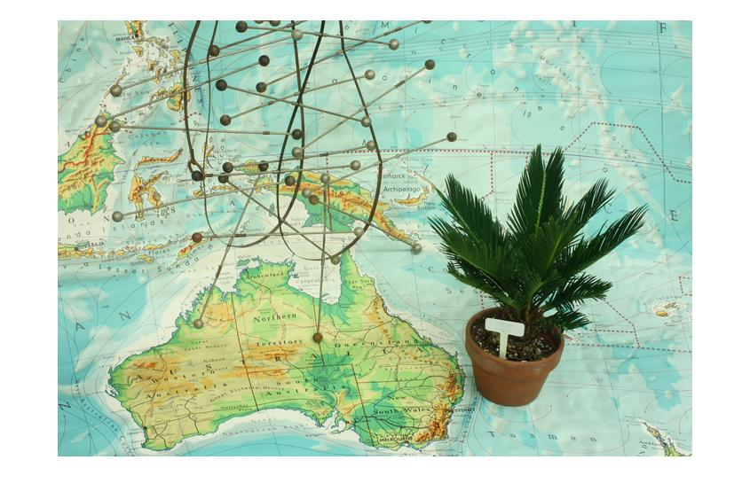 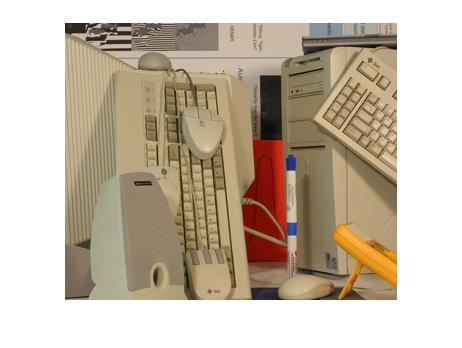 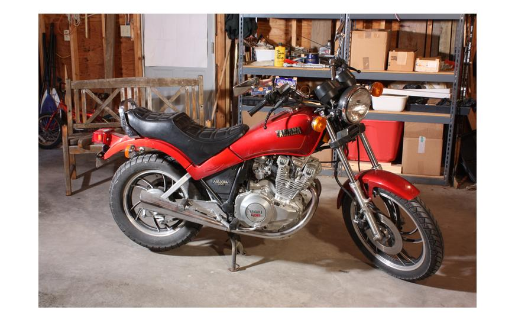 |
| 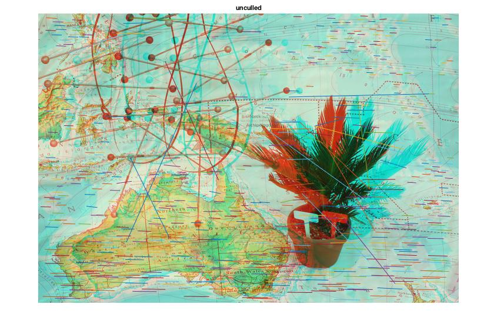 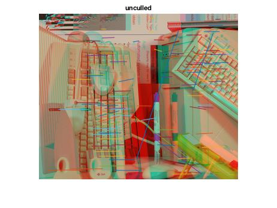 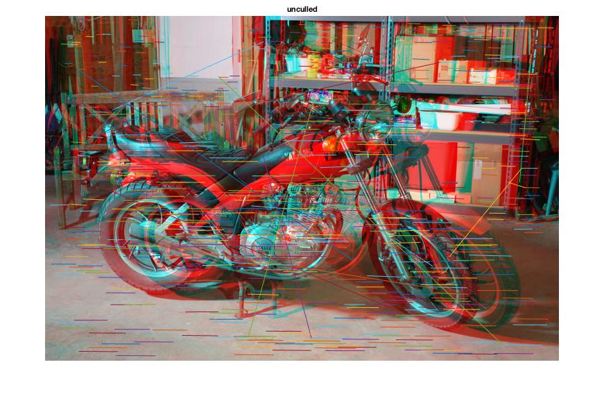 |

|
| 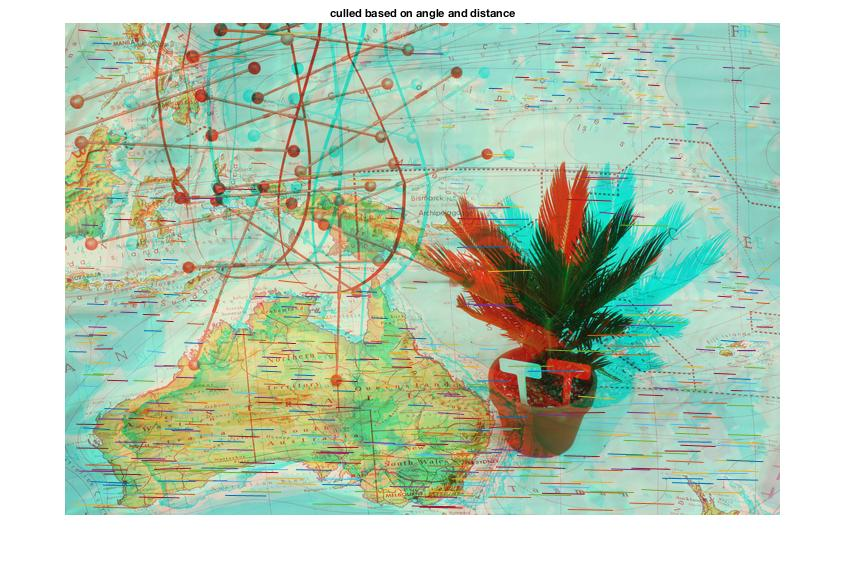 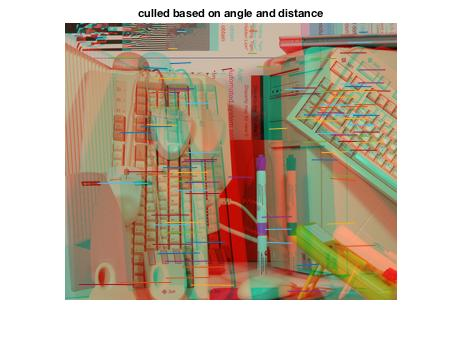 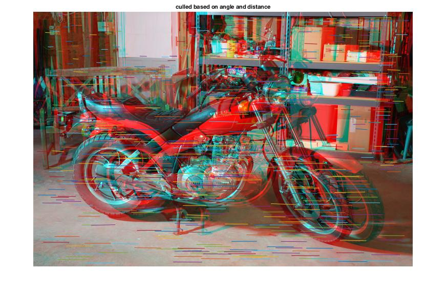 |
| 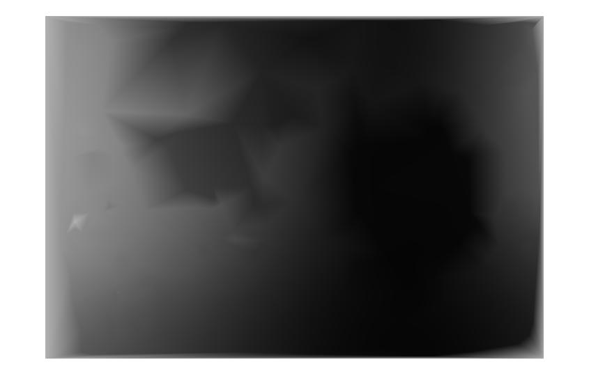 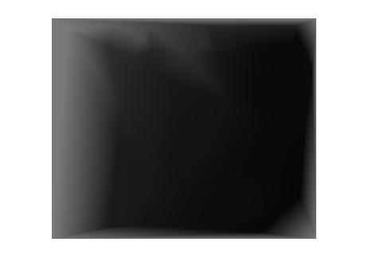 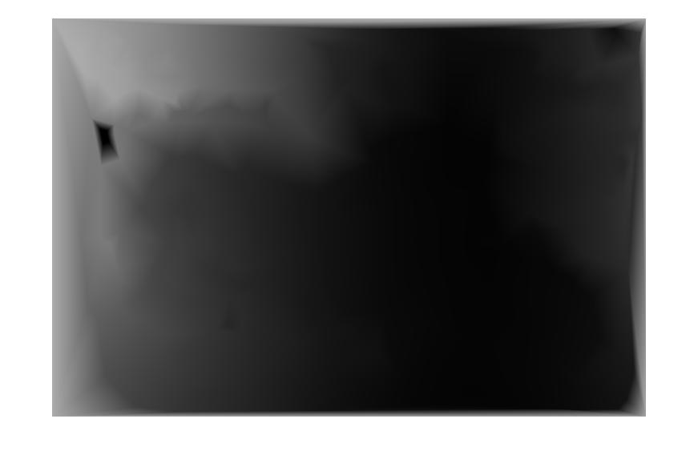 |
| 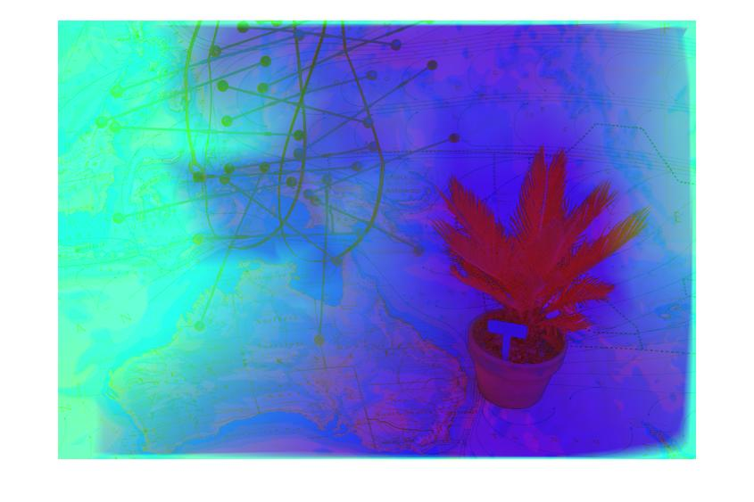 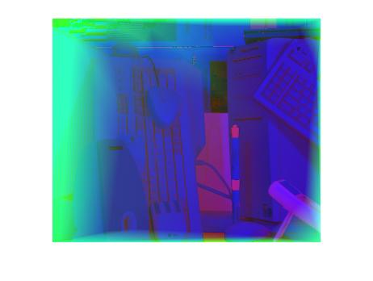 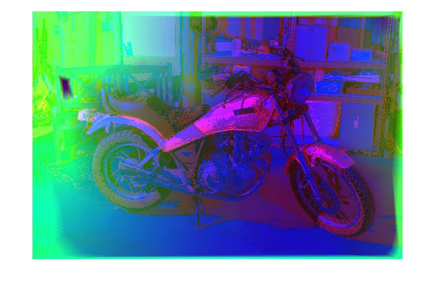 |
Semantic texton forest
We used a classifer called semantic texton forest. Its made up of several texton probability trees with labels.
A Problem
While it should be easy to add or reduce the dimensionality of the textons in theory, the code we used was not very adaptable. As it turns out the STF algorithm we used converted the images into a color format called lab color. We spent countless hours trying to implement an extended color channel to no avail.
A solution
- Rather than try and to create a new channel for the STF. black box, we decided to add the height map to the images.
- We converted the RGB representation into HSV. Compressed two of the channels into one, and added the heightmap into one of the two condsend channel
Code for generating our modifed HSV image
The following code generates a modifed HSV format image that truncates the hue, and the saturation into a single channel, then it fills our third channel with a depth mapimg = rgb2hsv(image);%conver image to HSV
%%
%compress hue and saturation into one channel
sat = img(:, :, 2); %pull the saturation
hue = img(:, :, 1); %pull the hue
avg = (sat + hue)/2; %the the result and divide them by two
img(:, :, 1) = avg; %assign the new average into the first channel
%%
%filled with zeros until we have the depth map.
x = size(img(:,:,1)); %filling a 2-d array with zeros
img(:, :, 2) = double(zeros(x)); %replace the saturation layer with our dept hmap
%%
%add in our depth map
img(:, :, 2) = dm
RGB representation of HSV to hsV+dm
RGB repreentation of HSV
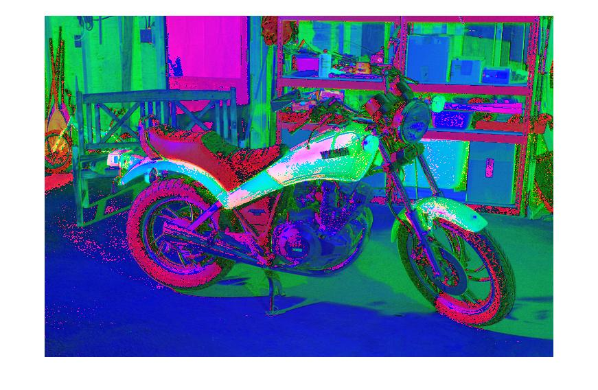
RGB represntation of HSV with the hue and saturation crushed into a single channel
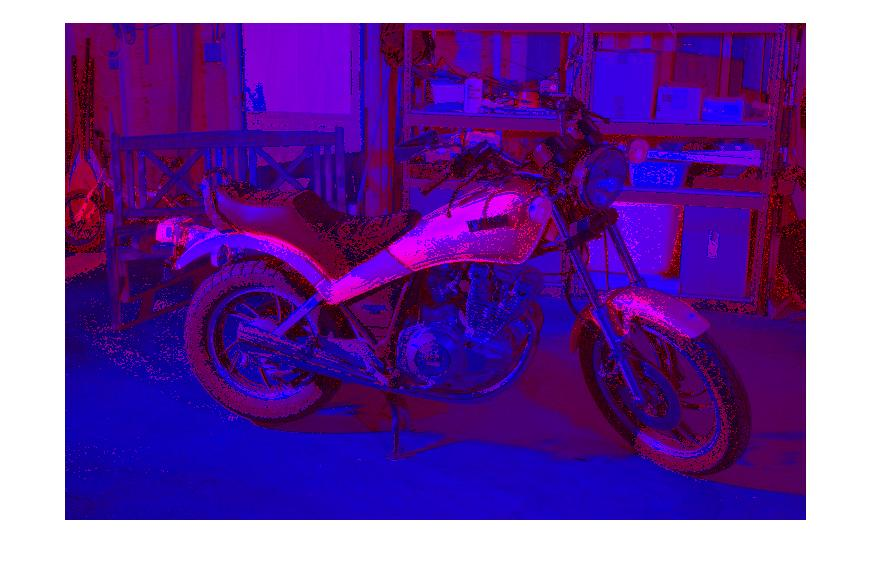
Depth map to be added
RGB representation of hsV+dm
Takeaways
This project was hampered by a late database selection. We built the tools without having established something on which we could use these tools. Future projects should establish what the inputs and outputs will be early in development.
We also learned that when other people's work is encorporated into our work, it is best to respect the encapsulation of that project, and focus on adapting the inputs and outputs to suit our needs rather than attempt to alter the project's inner workings. We spent countless hours tinkering with the inner workings of Semantic Texton Forest implementation, when we eventually settled on just altering its inputs.
The usefulness of a tool is often highly dependent on the nature of the input. Matlab's triangulate function would have given us a better quality heightmap than our hand implementation, but it required data we lacked or lacked the experiance to configure.
Conclusions
We developed the tools needed to generate rough distance images from binocular sets, the tools needed to feed that information to a classifier, and enough of an understanding of the classifier to run it given a label set. However, we were unable to integrate the preprocessing and classification portions of the project in order to incorporate depth into image segmentation. This was in part due to a lack of a dataset that included a label set as well as binocular images, as well as a compressed window of time in which we had available to work within. Given another week, we believe we could have a working implementation, as a label set could be hand generated.